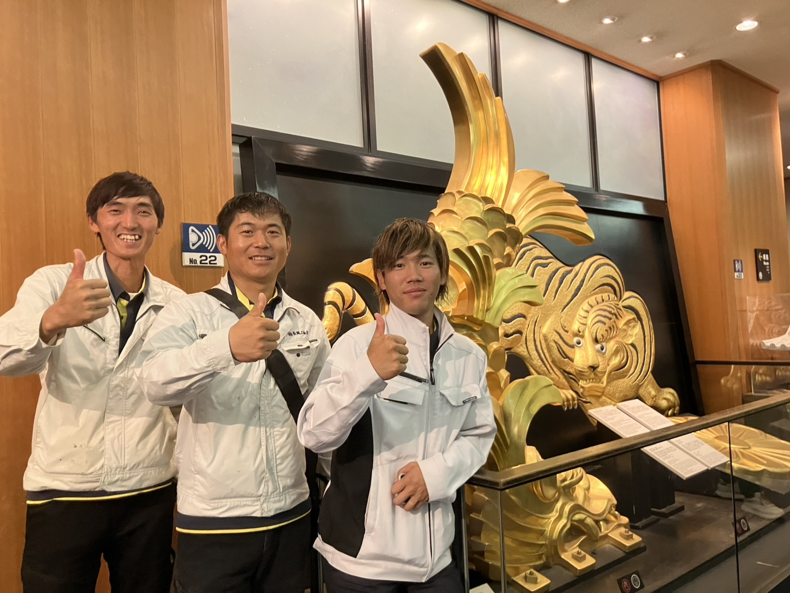

Recruitment
採用情報
新卒・キャリア（第二新卒）採用募集要項
募集概要
| 採用予定人数 | 若干名 |
|---|---|
| 採用予定職種 |
① 現場監督候補（施工管理） ② 舗装作業員 ③ 土木作業員 ④ 重機オペレーター ⑤ 運転手 ⑥ 営業職 ⑦ バックオフィス |
| 仕事内容 |
● 施工管理（現場監督候補） 舗装工事・土木工事の現場管理、進捗・品質・安全の確認をしていただきます。 ● 舗装・土木作業員 道路のアスファルト舗装・土木工事の現場作業を担当。先輩社員と一緒にOJTで技術を習得できます。 ● 重機オペレーター バックホウなどの重機を操作し、舗装・土木工事の現場を支えます。資格取得支援あり。 ● 運転手 ダンプトラックなどの車両で資材・土砂の運搬を担当。現場を物流面から支えます。 ● 営業職 お客様のニーズをヒアリングし、最適な工事プランを提案・受注までサポートします。 ● バックオフィス 経理・総務・事務を担い、会社全体を裏側から支える重要なポジションです。 |
| 勤務時間 | 7:30〜17:00（現場による） |
| 勤務地 |
愛知県春日井市を中心とした各現場 研修終了後の勤務地は本人の希望エリアへ配属予定。 |
給与・福利厚生・待遇
| 給与（月給） |
月給32万円〜 ※ 経験・スキルを考慮して優遇あり |
|---|---|
| 賞与 | 年2回（6月・12月） |
| 昇給 | 年1回（4月） |
| 休日休暇 |
固定休みの曜日：日曜日 週休2日制 年間休日107日（令和8年度） |
| 福利厚生 |
社会保険完備（健康・厚生年金・雇用・労災） 退職金制度 / 資格取得支援制度 制服・安全装備品支給 / 車通勤可（駐車場あり） |
| 試用期間 |
あり（入社後3ヶ月） 試用期間中も条件は本採用時と変更なし。 |
応募方法
| 提出書類 | 履歴書（メールまたは郵送） |
|---|---|
| 選考の流れ |
① 応募・書類送付 ② 書類選考 ③ 面接（1〜2回） ④ 内々定 |
中途採用募集要項
募集概要
| 募集職種 |
① 現場監督候補（施工管理） ② 舗装作業員 ③ 土木作業員 ④ 重機オペレーター ⑤ 運転手 ⑥ 営業職 ⑦ バックオフィス |
|---|---|
| 雇用形態 | 正社員 |
| 仕事内容 |
舗装工事・土木工事の施工作業および現場管理。 未経験の方は先輩社員とのOJTで技術を習得していただきます。 経験者は即戦力として活躍いただけます。 |
| 必要資格 |
未経験OK
経験者優遇
普通自動車免許（AT可）建設・土木・舗装の経験がある方は優遇します。 |
| 勤務時間 | 7:30〜17:00（現場による） |
| 勤務地 |
愛知県春日井市を中心とした各現場 ※ 車通勤可（駐車場あり） |
給与・福利厚生・待遇
| 給与（月給） | 月給32万円〜 ※ 経験・スキルを考慮して優遇あり |
|---|---|
| 賞与 | 年2回（6月・12月） |
| 昇給 | 年1回（4月） |
| 休日休暇 |
固定休みの曜日：日曜日 週休2日制 年間休日107日（令和8年度） |
| 福利厚生 |
社会保険完備（健康・厚生年金・雇用・労災） 資格取得支援制度 / 制服・安全装備品支給 退職金制度 / 車通勤可（駐車場あり） |
| 試用期間 |
あり（入社後3ヶ月） 試用期間中も条件は本採用時と変更なし。 |
応募方法
| 提出書類 | 履歴書（メールまたは郵送） まずは電話・メールでのご連絡も歓迎です。 |
|---|---|
| 選考の流れ |
① 応募・ご連絡 ② 書類選考 ③ 面接（1〜2回） ④ 採用 |

Our People
長縄工務店の
誠実な人材像
私たちは、地域の安全を支え誇りが持てる、誠実で明るい人材への育成を大切にしています。技術的なスキルの成長はもちろんのこと、さまざまな機会を通しての人間性の育成を大切にしています。
技術と経験と資格、これら専門性の高い業務の習得と同時に、いつも笑顔でいられるような、堂々とした人としての成長を重視しています。高い技術と高い人間性を目指すことにより、より多くの方々、そして社会の期待に応えるものと考えています。
-
誠実さ
地域の安全を守る責任感と、仕事への真摯な姿勢
-
技術と人間性
専門スキルの習得と、チームを支える人としての成長
-
明るさ・誇り
笑顔で現場に立ち、地域インフラを担う誇りを持つ
Why You Can Relax
未経験でも
安心できる理由
「きつそう」「自分にできるか不安」——その気持ち、よくわかります。
でも、長縄工務店ではそんな不安を一つひとつ解消できる環境があります。
先輩と一緒に
現場を回りながら覚える
入社後、いきなり一人で現場に出ることはありません。 必ず先輩社員と一緒に現場を経験しながら、 見て・聞いて・やってみてを繰り返してスキルアップ。 焦らず、自分のペースで成長できます。
最初から完璧を
求めません
知識ゼロからのスタートで全く問題なし。 「わからなくて当たり前」という文化が根づいているから、 何でも気軽に質問できる雰囲気があります。 ミスを責めるより、なぜそうなったかを一緒に考えます。
大切にするのは
3つだけ
新人に大切にしてほしいことは3つだけ。 「挨拶」「安全第一」「わからないことを聞く姿勢」。 この3つさえあれば、あとは一緒に成長できます。 それ以外のことは入社後に覚えていければOKです。
先輩の声
「土木業界のことは右も左もわからない完全な未経験からのスタートでした。最初は不安もありましたが、現場の最前線で揉まれながら知識を吸収し、一つひとつ経験を重ねるうちに、気づけば今では一通りの業務をスムーズにこなせるようになり、自分の成長を実感しています。未経験からでも、やる気次第でどこまでも成長できるのがこの仕事の魅力です。」
「土木業界のことは右も左もわからない完全な未経験からのスタートでした。最初は不安もありましたが、現場の最前線で揉まれながら知識を吸収し、一つひとつ経験を重ねるうちに、気づけば今では一通りの業務をスムーズにこなせるようになり、自分の成長を実感しています。未経験からでも、やる気次第でどこまでも成長できるのがこの仕事の魅力です。」